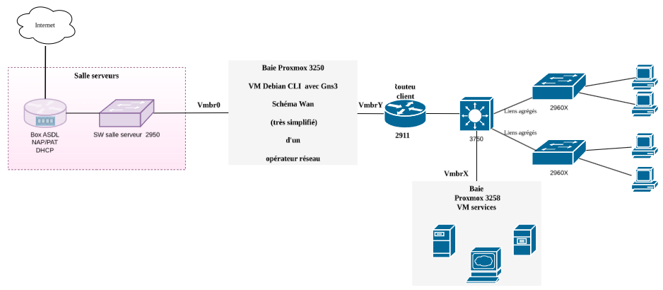
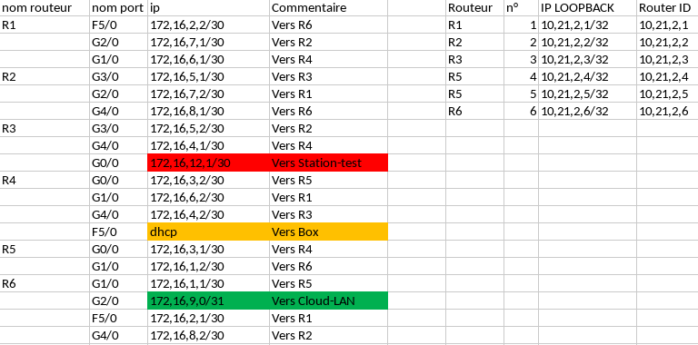
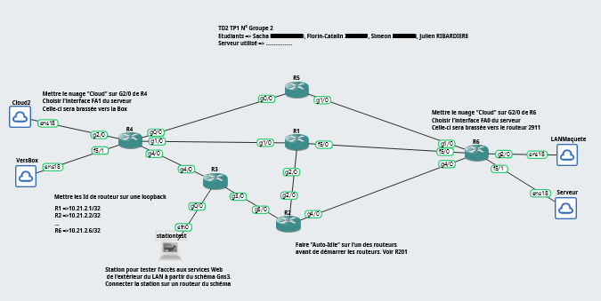
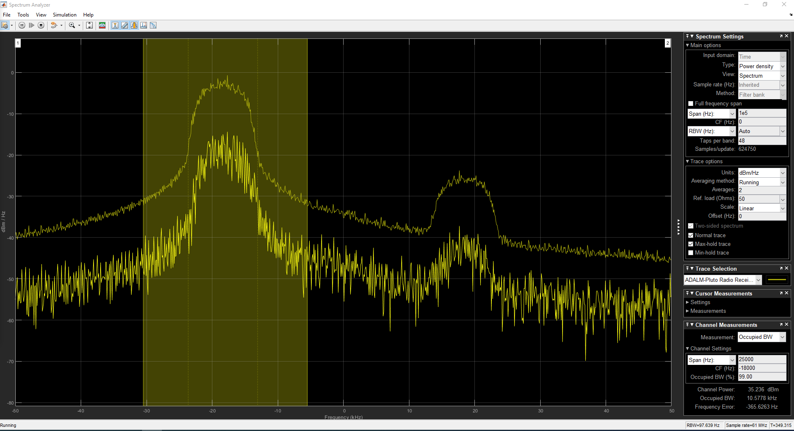
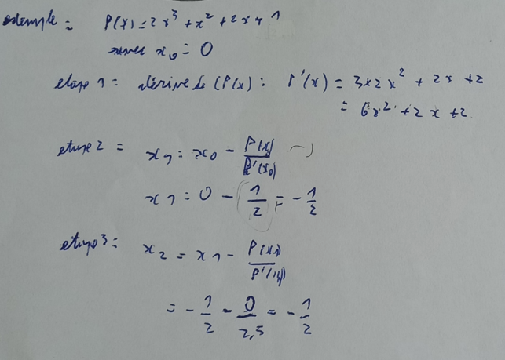

Julien RIBARDIERE
- Age: 27 ans
- Localisation: CAEN, Calvados
- Formation en cours: BUT Réseaux et Télécommunication
- Mail: julien.ribardiere14@gmail.com

Le projet intégratif est un projet permettant de faire la synthèse de l'ensemble des compétences acquises durant le BUT Réseaux et Télécommunications. Concretement, ce projet est divisé en troix parties:
Assister l'administrateur du réseau
• Comprendre l'architecture et les fondements des systèmes numériques, les principes du codage de l'information, des communications et de l'internet
• Configurer les fonctions de base du réseau local
• Identifier les dysfonctionnements du réseau local et savoir les signaler
• Installer un poste client, expliquer la procédure mise en place
Découvrir les transmissions et la ToIP
• Mesurer et analyser les signaux
• Caractériser des systèmes de transmissions élémentaires et découvrir la modélisation mathématique de leur fonctionnement
• Déployer des support de transmission
• Communiquer avec un tiers (client, collaborateur...) et adapter son discours et sa langue à son interlocuteur
• Connecter les systèmes de ToIP
S'intégrer dans un service informatique
• Utiliser un système informatique et ses outils
• Lire, executer, corriger et modifier un programme
• Traduire un algorithme, dans un langage et pour un environnement donné
• Connaitre l'architecture et les technologies d'un site Web
• Choisir les mécanismes de gestion de données adaptés au développement de l'outil et argumenter ses choix
• S'intégrer dans un environnement propice au développement et au travail collaboratif
Pour la partie Réseau, étrant donnée que c'est un projet à réalisé en groupe, je me suis principalement concentré sur la mise en place d'un réseau virtuel sur GNS3 hebergé sur PROXMOX (simulant un WAN), avec l'interconnection de plusieurs routeurs en utilisant le protocole OSPFv3 (avec l'utilisation de IPv4).
De plus, j'aiégalement fait de la gestion de groupe par la répartition des taches grace à l'utilistion de TRELLO et de GANTT PROJECT que j'ai synthétisé et regrouper dans un document PDF à rendre aux enseignants.
Pour la partie Télécommunication, j'ai réalisé un petit projet de lecture et d'analyse des données affichées par un oscilloscope, tel que l'OBW (Occupancy Bandwidth) et le SNR (Signal to Noise Ratio).
Pour la partie Mathématique, j'ai du faire des recherches dans l'objectif de comprendre et de pratiquer la méthode de dichotomie et la méthode de Newton, ainsi que l'identification d'intervalle sur un polynome.
Partie Réseau:
  Partie Télécommunication:
Partie Mathématique:

Pour la Partie Réseau, bien qu'ayant fait fonctionner l'OSPFv3 dans le réseau virtuel, j'aieu du mal à faire intéragir avec le matériel réel, empechant ainsi de faire circuler les pacquets provenant du réseau physique de la partie LAN vers la box.
Par conséquent, je devrais approfondir mes connaissances sur la communication entre les routeurs ayant été adapter avec l'OSPFv3 et les routeurs n'ayant pas été configurer avec ce protocole (un critère faisant partie de l'évaluation du projet).
Pour la Partie Télécommunication, j'ai pu apprendre à lire et à analyser les données affichées par un oscilloscope.
Mais ayant du mal à mettre en applications les formules dans l'objectif de vérifier les résultats attribués sur le spectre. Par conséquent, je devrais continuer à pratiquer la lecture des données sur le spectrographie et à utiliser les formules pour vérifier les résultats.
Pour la Partie Mathématique, j'ai pu comprendre et pratiquer la méthode de dichotomie et la méthode de Newton, ainsi que l'identification d'intervalle sur un polynome.
Et grace à un travail approfondie, j'ai pu comprendre comment utiliser la méthode de Newton pour identifier les racines d'un polynome, ainsi que l'utilisation de la méthode de dichotomie pour identifier les intervalles sur un polynome avec une relative faciliter.